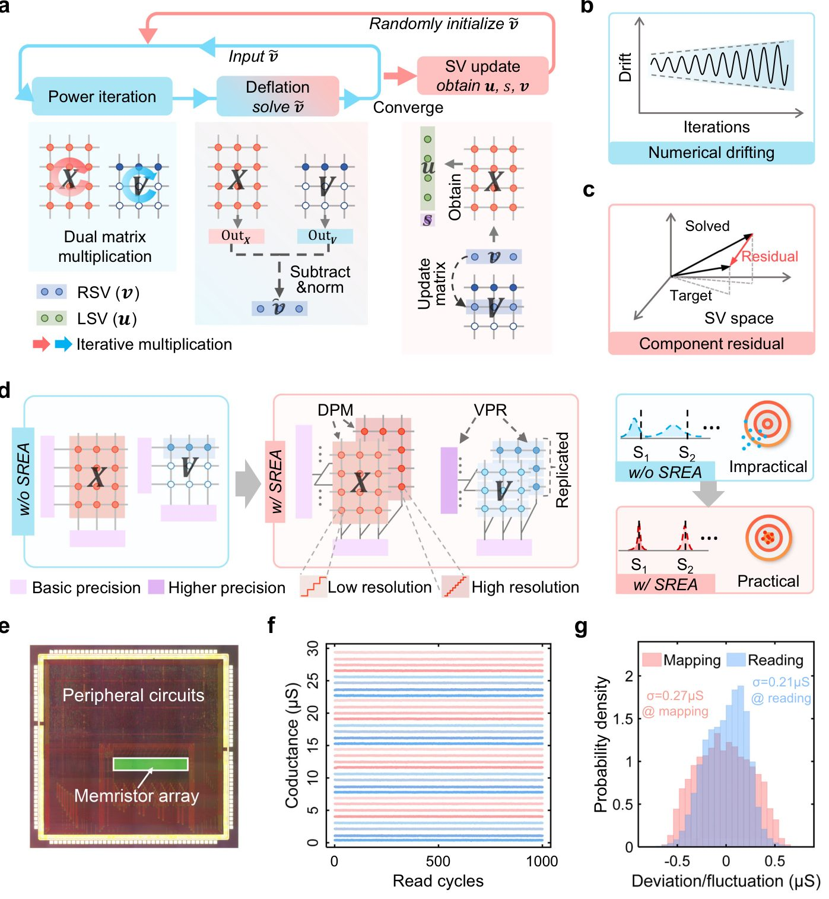
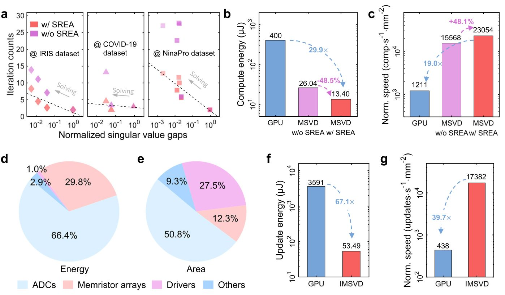

Kompilyator va xotirani birlashtiruvchi yangi memristor chipi

Zamonaviy kompyuterlar protsessor va xotira o'rtasida ma'lumot almashish uchun ko'p quvvat sarflaydi. Muhandislar ma'lumotlarni bir vaqtning o'zida saqlash va hisoblash imkonini beruvchi memristorlar asosidagi yechimni taklif qilishdi. Bu murakkab matematik amallarni minimal energiya sarfida bajarishga yordam beradi.
Asosiysi
- Memristorlar xotira va hisoblashni bitta chipda birlashtiradi.
- SREA arxitekturasi hisoblashdagi xatoliklar va shovqinlarni kamaytiradi.
- Energiya samaradorligi va tezlik o'nlab marta oshdi.
Batafsil
Ishlanmaning asosida katta hajmli ma'lumotlarni tahlil qilish uchun ishlatiladigan singulyar qiymatni taqsimlash (SVD) usuli yotadi. An'anaviy von Neyman arxitekturasi ko'p sonli takroriy hisob-kitoblar paytida ma'lumotlarni tinimsiz ko'chirishga majbur bo'ladi, bu esa tizim tezligini cheklaydi.
Tadqiqotchilar ushbu muammoni hal qilish uchun maxsus tanlanishni kuchaytirilgan arxitekturani (SREA) yaratdilar. Bu yondashuv xatoliklarni kamaytirib, matritsalarni hisoblashda raqamli aniqlikni saqlab qoladi. Natijada tizim tasvirlarni yaxshilash, epidemiologik ma'lumotlarni tiklash va til modellarini ishga tushirish kabi vazifalarda yuqori aniqlik ko'rsatdi.
Sinovlar shuni ko'rsatdiki, taklif etilgan tizim an'anaviy apparat ta'minotiga nisbatan o'n barobardan ortiq tezlik va energiya samaradorligiga erishadi. Bu esa sun'iy intellekt va chekka qurilmalar uchun yangi imkoniyatlar ochadi.
Cheklovlar
Natijalar asosan simulyatsiyalar va tajriba bosqichidagi memristor chiplari asosida olingan.
Maqolaning batafsil tahlili
Annotatsiya
Ilmiy hisob-kitoblar, signalarni qayta ishlash va mashinaviy o'qitishda keng qo'llaniladigan matritsalarning singular taqsimoti (SVD) kabi takroriy hisoblash jarayonlari an'anaviy fon Neyman arxitekturasida katta miqdorda energiya sarflaydi. Xotira va hisoblash bloklarining alohida joylashgani ma'lumotlarni doimiy uzatishni talab qilgani bois, murakkab axborotni qayta ishlashda jiddiy qiyinchiliklar tug'diradi. Ushbu cheklovlarni yengish uchun mualliflar memristiv xotirada hisoblash (compute-in-memory, CIM) чипларига asoslangan memristiv SVD (MSVD) tizimini taklif etadilar.
Ehtiyot bo'ling
Taklif etilgan yondashuv simulyatsiyalar va maxsus chip modellarida sinovdan o'tgan bo'lib, uni real tijoriy tizimlarga joriy etish uchun texnologik barqarorlikni ta'minlash muhim.
Hisoblashlar davomida raqamli aniqlikni saqlash uchun tanlanma ko'rinishni yaxshilaydigan arxitektura (selective representation enhanced architecture, SREA) ishlab chiqilgan bo'lib, u iteratsiyalar davomida aniqlikni kafolatlaydi. MSVD uchta murakkablik darajasidagi stsenariyda sinab ko'rildi: tasvir sifatini yaxshilash va epidemiologik ma'lumotlarni tiklash uchun past darajadagi yaqinlashtirish; foydalanuvchi tomonidan kengaytiriladigan tan olish, bunda inkremental MSVD mavjud ma'lumotlarni o'zgartirmasdan yangi foydalanuvchilarni qo'shish imkonini beradi; hamda katta hajmli til modellarining (LLM) vaznlarini parchalash, bu yerda MSVD asosidagi boshlang'ich sozlash matematik testlarda standart to'g'rilash (fine-tuning) usulidan ustun keldi.
Izoh
Xotirada hisoblash (compute-in-memory, CIM) — ma'lumotlarni protsessorga ko'chirmasdan, ularni saqlash joyining o'zida qayta ishlaydigan va energiya sarfini keskin kamaytiradigan ilg'or texnologiya.
SREA arxitekturasi oddiy MSVD ga nisbatan energiya sarfini kamaytiradi va yaqinlashish tezligini oshiradi. Umuman olganda, to'liq tizim barcha sinovdan o'tgan stsenariylar bo'yicha an'anaviy apparat ta'minotiga nisbatan energiya samaradorligi va tezlikni bir necha barobar oshirishga erishdi. Bu ustunlik inkremental rejimdagi har bir yangilanish siklida yanada ortib boradi.
Muhim
MSVD va SREA arxitekturasi an'anaviy apparat vositalariga qaraganda barcha sinov stsenariylarida energiya samaradorligi va tezlik bo'yicha bir necha barobar yuqori natijalarni ko'rsatdi.
Ushbu tadqiqot turli xil amaliy vazifalarda SVD jarayonini sezilarli darajada tezlashtiradi va memristikka asoslangan tizimlarning umumiy maqsadli hisoblash sohasiga kengroq tatbiq etilishiga yo'l ochadi.
Past darajadagi tasvirlar yuqori o'lchamli ma'lumotlardan muhim naqshlarni ajratib olish va hisoblash murakkabligini sezilarli darajada kamaytirishda hal qiluvchi vosita bo'lib xizmat qiladi. Singulyar qiymatni ajratish (SVD) minimal ma'lumot yo'qotilishini kafolatlaydigan matematik jihatdan optimal usul hisoblanadi. So'nggi yillarda SVD asosidagi biotibbiy ma'lumotlarni qayta ishlash va yirik til modellarini (LLM) moslashtirish katta e'tiborni tortdi. Biroq, SVD odatda vektor-matritsa ko'paytirishni talab qiluvchi murakkab iterativ yondashumlarga tayanadi. An'anaviy CMOS asosidagi fon Neyman arxitekturalarida amalga oshirilganda, bu ma'lumotlarning doimiy harakati tufayli yuqori energiya sarfi va uzoq vaqt talab qilishiga olib keladi.
Izoh
Singulyar qiymatni ajratish (SVD) va memristorlar
> SVD ma'lumotlarni siqish uchun matritsani tashkil etuvchi qismlarga ajratuvchi chiziqli algebra usulidir. Memristorlar (CIM) xotiraning o'zida hisoblashni amalga oshirib, jarayonni keskin tezlashtiradi.
Buning o'rniga, xotirada hisoblash (CIM) texnologiyasi samarali SVD uchun istiqbolli yechim taklif qiladi. Shunga qaramay, SVD ni memristor bazasiga o'tkazish qo'shaloq iteratsiya jarayoni va ko'p miqyosli chiqishlar tufayli ikkita muhim muammoni keltirib chiqaradi (Rasm SN). Birinchidan, eng katta singulyar qiymatni hisoblashda iteratsiya bosqichida raqamli siljish (drift) yuzaga keladi. Ikkinchidan, asl matritsadan ta'sirni olib tashlash jarayonida xatoliklar sababli qoldiq komponentlar paydo bo'ladi.
Algoritmni CIM apparati bilan bog'lash uchun mualliflar tanlangan taqdimotni kuchaytirilgan arxitekturani (SREA) taklif qildilar. Ushbu tizim raqamli siljishni kamaytirish uchun qo'shaloq aniqlikdagi xaritalashni (DPM) va qoldiqlarni minimallashtirish uchun vektorlarni qayta ishlashni to'g'rilashni (VPR) o'z ichiga oladi. MSVD ning ko'p qirraliligi turli o'lchamdagi matritsalar yordamida sinovdan o'tkazildi.
Muhim
MSVD ning aniqligi va samaradorligi
> SREA yordamidagi MSVD tasvirni yaxshilash vazifalarida 31.0 dB PSNR va 0.940 SSIM qiymatiga erishdi, shuningdek COVID-19 pandemiyasi davridagi ma'lumotlarni tiklashda 0.999 korrelyatsiya koeffitsientini ko'rsatdi.
Qo'shtmcha ta'lim vazifalari uchun ishlab chiqilgan inkremental MSVD jestlarni tanib olish va uyqu bosqichlarini aniqlashda mos ravishda 19.29% va 11.07% ga yuqori aniqlik ko'rsatdi. Bundan tashqari, LLaMA3.2-3B modeli uchun SVD asosidagi initsializatsiya GSM8K ma'lumotlar bazasida standart usuldan 4.85 punktga (10.45%), MATH bazasida эsa 0.68 punktga yaxshilandi.
Ehtiyot bo'ling
Ishlash ko'rsatkichlari bo'yicha eslatma
> Olingan barcha natijalar simulyatsiyalarga asoslangan bo'lib, jismoniy qurilmalarda barqarorlikni qo'shimcha tekshirish talab etiladi.
Benchmark natijalariga ko'ra, SREA energiya sarfini 48.5% ga kamaytiradi va tezlikni 48.1% ga oshiradi. An'anaviy CMOS bilan solishtirganda, MSVD 29.9 marta yuqori energiya samaradorligi va 19.0 marta tezlikni ta'minlaydi. Inkremental MSVD esa 67.1 marta yuqori energiya samaradorligi va 39.7 marta tezlikka erishadi.
Natijalar
...
Convergence characterization
SREA algoritmining samaradorligini tasdiqlash uchun mualliflar dastlab 150 × 4 o'lchamli matritsadan iborat IRIS ma'lumotlar to'plami yordamida tajribalar o'tkazdilar. SREA qurilma darajasida amalga oshirish uchun quyidagicha sozlangan: DPM uchun [2, 5] bitli kesish; tizim standartidagi 8-bitli kirish aniqligiga qo'shimcha ravishda 6 ta kirish biti; va VPR (vektorli qayta ishlashni aniqlashtirish) uchun 4 marta takrorlanish. 3a-rasmda 20 ta tajribaning o'rtacha qiymatlari asosida SREA bilan va SREAsiz hisoblangan singular qiymatlar keltirilgan. Birinchi singular qiymat tezda yaqinlashadi, keyingi qiymatlar esa qoldiq xatoliklarning to'planishi sababli sekinroq yaqinlashishni ko'rsatadi. SREA bilan birgalikdagi MSVD kichikroq xatoliklarni beradi, bu esa tezroq va aniqroq iteratsiyadagi hisoblarni bildiradi.
Izoh
> SREA (Sparse Reconstruction Error Alleviation) — apparat tizimlaridagi hisoblash xatolarini kamaytirish usuli bo'lib, DPM va VPR uning asosiy qismlaridir.
3b-rasmda SREA bilan va SREAsiz hisoblangan singular qiymatlarning normallashtirilgan xatolari taqqoslangan: SREA qo'llanilgan MSVD oddiy MSVD ga nisbatan o'rtacha aniqlikni 13× gacha yaxshilashini ko'rsatadi. 3c-rasmda tiklangan singular vektorlar (RSV) uchun sonli xatoliklarning taqsimoti ko'rsatilgan. SREA yordamida yechilgan vektorlar xatoning standart og'ishiga ega bo'lib, σ = 0.192 ni tashkil etadi, bu SREAsiz holatdagidan (σ = 0.415) ikki baravar kamdir va bu aniqlik oshganini tasdiqlaydi. 3d, e-rasmlar dastlabki 3 ta RSV va LSV vektorlarining evolyutsiyasini ko'rsatadi, ular bir nechta iteratsiyada aniq yaqinlashadi. SREA ning alohida qismlari samaradorligini baholash uchun ablyatsion tahlil bajarildi (SN 6-rasm).
Muhim
> SREA komponentlarining o'zaro ta'siri singular qiymatlar aniqligini 13× gacha oshiradi va RSV xatosi standart og'ishini ikki baravarga kamaytiradi (σ = 0.192).
Ikki tomonlama aniqlikdagi moslashtirish (DPM) singular qiymat xatolarini 8.0\× gacha kamaytirsa, vektor qayta ishlashni yaxshilash (VPR) 3.4× gacha xatolikni qisqartiradi. SREA tamoyillarini ochib berish uchun olingan yechimlar asosiy komponentlar tahlili yordamida ikki o'lchamli parametr fazosiga proyeksiyalandi va turli ranqlar uchun rekonstruksiya xatosi landshaftlari olindi (3f-rasm; batafsil trayektoriyalar va individual landshaftlar SN 7-rasm va 1-eslatmada keltirilgan). Rekonstruksiya xatosi landshaftlari SREA va uning qismlari iterativ dinamikaga qanday ta'sir qilishini ko'rsatadi. DPM alohida iteratsiyalar uchun tikroq landshaftlarni hosil qiladi, biroq yuqori ranqli yechimlarda qoldiq xatolar tufayli to'g'ridan-to'g'ri yaqinlashish yo'llarini o'rnatishda qiynaladi. VPR esa yanada mukammal deflyatsiyaga erishadi, ammo faqat shu komponentga tayanadigan tizimlar tekislangan landshaftlarga bog'liq bo'lgan raqamli siljishga duch keladi. Sinergetik ta'sir natijasida SREA har qanday alohida komponentga qaraganda samaraliroq optimallashtirish trayektoriyalarini yaratadi.
Low rank approximation
Past ranqli yaqinlashish tasvirlar va vaqtinchalik ma'lumotlarni qayta ishlashda, xususan siqish va belgilarni ajratib olishda juda muhimdir. Mualliflar MSVD ning SREA bilan samaradorligini 256 × 256 o'lchamli HKU logotipi yordamida tasvirlarni yaxshilashda ko'rsatib berdilar (4a-rasm; batafsil konfiguratsiyalar SN 3-jadvalda keltirilgan). Tasvir 16 \6 16 bloklarga bo'linib, eng yuqori 25% ranqlarni saqlab qolish uchun MSVD orqali qayta ishlandi. Rekonstruksiya sifatini baholash uchun PSNR va SSIM metrikalaridan foydalanildi. Dasturiy SVD natijalari bilan solishtirganda, SREA bilan MSVD maksimal PSNR 31.0 dB va maksimal SSIM 0.940 ga erishadi, bu SREAsiz MSVD ga nisbatan PSNR da 4.8 dB gacha va SSIM da 0.114 gacha yaxshilanishni ko'rsatadi (4b, c-rasm).
Izoh
> PSNR va SSIM — tasvirlarni tiklash sifatini baholash uchun qo'llaniladigan asosiy metrikalar bo'lib, yuqori qiymatlar asl nusxaga yaqinlikni bildiradi.
Neyrotarmoqlarga asoslangan va siqilgan sezish usullari bilan solishtirganda (SN 8, 9-rasm), MSVD asosidagi past ranqli rekonstruksiya neyrotarmoqlarning katta hajmli parametrlaridan qochib, qurilma uchun qulay samaradorlikni ta'minlaydi. Yuqori rekonstruksiya aniqligini talab qiluvchi ilovalar uchun tizim unumdorligini yanada nozik DPM va oshirilgan VPR izchilligi orqali kuchaytirish mumkin. MSVD ning vaqtinchalik ma'lumotlar bilan ishlash qobiliyatini tekshirish uchun u AQShning 51 shtatidagi haftalik COVID-19 kasalxonaga yotqizish holatlariga qo'llanildi (104 × 51 matritsa). Birinchi va ikkinchi singular vektorlar yordamida dekompozitsiya shtatlar bo'ylab turli pandemiya tendentsiyalarini ochib beradi (4d, e-rasm).
Muhim
> MSVD bilan SREA tasvirlar uchun 31.0 dB PSNR va 0.940 SSIM ga erishadi, COVID-19 vaqt seriyalari uchun esa dastlabki ikki ranq bo'yicha 0.999 korrelyatsiya koeffitsientini ta'minlaydi.
SREA bilan jihozlangan MSVD birinchi komponent uchun µ = -4.89 × 10⁻⁵ va ikkinchi komponent uchun µ = 6.72 × 10⁻³ bo'lgan o'rtacha normallashtirilgan xatolar bilan yuqori rekonstruksiya aniqligiga erishadi. Rekonstruksiya qilingan matritsalar va dasturiy etalon o'rtasidagi korrelyatsiya koeffitsientlari tahlili shuni ko'rsatadiki, SREA yordamida yaxshilangan rekonstruksiyalar dastlabki ikki ranq uchun 0.999 va uchinchi ranq uchun 0.995 koeffitsientlarga erishib, yuqori ranqli rekonstruksiyalarda SREAsiz usuldan sezilarli darajada ustun keladi (4f-rasm). Bu natijalar SREA iterativ deflyatsiya jarayonidagi raqamli siljishlar va qoldiqlarni kamaytirish orqali erishilganini ko'rsatadi.
Kengaytiriladigan tizimlar uchun inkremental matritsa parchalari
Inkremental SVD biomedikal signallarni qayta ishlashda samarali belgilar (features) ajratib olish, ularning o‘lchamini va hisoblash yuklamasini kamaytirish uchun keng qo‘llaniladi, bu esa uni elektromiogramma (EMG) va elektroensefalogramma (EEG) signallarini tahlil qilish uchun taqiladigan tibbiy qurilmalarga integratsiya qilish imkonini beradi. Fiziologik signallar shaxslar orasida sezilarli darajada farq qilgani va bir xil faollik turli foydalanuvchilarda noyob naqshlar hosil qilgani sababli, mavjud foydalanuvchilar asosida o‘qitilgan tasniflagichlarni yangi foydalanuvchilarga tatbiq etish qiyinlashadi. Ushbu muammoni hal qilish uchun mualliflar foydalanuvchilar bo‘yicha kengaytiriladigan tan olish uchun inkremental MSVD tizimini taklif qiladilar (5a-rasm). Ushbu yondashuv tizimni noldan qayta hisoblamasdan yangi foydalanuvchilarni samarali qo‘shish uchun oldindan hisoblangan singular komponentlardan (RSV) foydalanadi (5b-rasm).
Izoh
Inkremental SVD va RSV — yangi ma'lumotlar qo'shilganda matritsa parchalarini "yo'l-yo'lakay" yangilash usullari bo'lib, memristorlar esa hisob-kitoblarni bevosita xotirada bajarishga imkon beruvchi apparat elementlaridir.
Tizim NinaPro ma'lumotlar to'plimidan foydalangan holda 4 ta jest uchun 10 kanalli EMG signallari asosida EMG jestlarini tan olish vazifasida sinovdan o'tkazildi (5c-rasm), bunda foydalanuvchilar soni 2 tadan 8 taga bosqichma-bosqich oshirildi. Har bir qadamda faqat yangi foydalanuvchilar ma'lumotlarini o'z ichiga olgan 864 × 500 o'lchamli signal matritkasi SREA konfiguratsiyalariga ega inkremental MSVD yordamida 500 × 6 o'lchamli belgi ekstraktorlarini yangilash uchun qo'shildi. 2 nafar foydalanuvchi uchun 15 ta takrorlash bo'yicha o'rtacha aniqlik 88.26% ni tashkil etdi (dasturiy ta'minotdagi 89.58% ga nisbatan) (5d-rasm). Foydalanuvchilar soni oshgani sayin (5e-rasm), 2 nafar foydalanuvchining RSV larini 8 nafar foydalanuvchi signallariga to'g'ridan-to'g'ri qo'llash aniqlikning keskin pasayishiga olib keladi, biroq inkremental MSVD yangilanishlarsiz 64.72% ga qaraganda 84.01% o'rtacha aniqlikka erishib, unumdorlikni 19.29% ga tiklaydi (SN-rasm). Xatolar matritsasi (SN-rasm) tan olishning mustahkamligini tasdiqlaydi, RSV tahlili (SN-rasm) esa foydalanuvchilar qo'shilganda birinchi vektor signalning umumiy xususiyatlarini aks ettirib minimal o'zgarishini, keyingi vektorlar esa shaxsiy xususiyatlarga moslashishini ko'rsatadi.
Kengaytirilish qobiliyati 75 nafar ishtirokchidan iborat yirik guruhda EEG yordamida uyqu bosqichlarini aniqlash vazifasi orqali apparat kalibrlangan simulyatsiya yordamida qo'shimcha ravishda o'rganildi (5g-rasm va Metodlar). Bu tajribada uyg'oqlik, REM uyqusi va chuqur uyqu (non-REM 3-bosqich) vaqtida yozib olingan EEG signallarini o'z ichiga olgan Sleep-EDFx ma'lumotlar bazasidan foydalanildi. Qisqa muddatli Fure almashtirishi orqali qayta ishlangan EEG signallari MSVD/inkremental MSVD yordamida belgilar ajratib olish va mantiqiy regressiya tasnifi uchun memristor tizimiga uzatildi. Yangilanishdan oldingi va keyingi ma'lumotlar matritsalari 900 × 500 o'lchamga ega bo'lib, olingan RSV lar 500 × 5 o'lchamni tashkil etdi (har bir vektor uchun 15 iteratsiya bilan). To'rt bosqichli yangilashdan so'ng, inkremental MSVD asosidagi usul yangilanmagan baza chizig'iga nisbatan 11.07% unumdorlik o'sishiga erishdi va dasturiy ta'minotga qiyosiy natijalarni ko'rsatdi (5g-rasm).
Muhim
Inkremental MSVD apparat xarajatlarini oshirmasdan yangi foydalanuvchilar uchun EMG va EEG signallarini tan olish tizimlarini kengaytirishga, EMG uchun aniqlikni 84.01% gacha tiklashga va EEG uchun 11.07% ga oshirishga imkon beradi.
Unumdorlikni tahlil qilish va benchmarklash
MSVD ning hisoblash afzalliklarini har tomonlama baholash uchun mualliflar bir nechta ma'lumotlar bazalari (IRIS, COVID-19 va NinaPro) bo'yicha tizimli ishlash tahlili va benchmarklashni amalga oshirdilar. Quvvat iteratsiyalarida maqsadli va keyingi qiymat o'rtasidagi singular qiymat oralig'i har bir rangdagi yaqinlashish tezligiga ta'sir qiladi. 6a-rasm 10⁰ dan 10⁻³ gacha bo'lgan normalashtirilgan singular qiymat intervallari oralig'ida yaqinlashish iteratsiyalari va normalashtirilgan singular qiymat intervallari logarifmi o'rtasidagi bog'liqlikni ko'rsatadi, bunda ketma-ket iteratsiyalar orasidagi vaqtinchalik kvadratik singular qiymat baholarining nisbiy farqi 2% dan kam bo'lishi talab qilinadi. Natijalar chiziqli tendentsiyani tasdiqlaydi va SREA bilan MSVD barcha muammo miqyoslarida SREA siz MSVD ga qaraganda yaqinlashish uchun doimiy ravishda kamroq iteratsiyalarni talab qilishini ko'rsatib, SREA ning hisoblashni tezlashtirishdagi ustunligini isbotlaydi.
Ehtiyot bo'ling
Unumdorlikni baholash ma'lum ma'lumotlar bazalari uchun simulyatsiyalar va apparat kalibrlashlariga asoslangan, shuning uchun natijalarni boshqa har qanday biomedikal vazifalarga to'g'ridan-to'g'ri ko'chirish qo'shimcha tekshiruvni talab qiladi.
MSVD ning ma'lumotlarni qayta ishlash va til modellarini moslashtirishdagi unumdorligi hamda masshtablanishi
Vedin qonuni yordamida MSVD ning ruxsat chegaralarining nazariy tahlili 14-rasmda keltirilgan. Muhokamalardan ko'rinib turibdiki, muayyan muammoning (σ_i - σi+1) / σ₁ sifatida ifodalangan normallashtirilgan spektral oralig'i tizim xatolari bilan birgalikda MSVD dagi minimal hal qilinadigan singulyar qiymatga ta'sir qiladi. Bitta SVD hisobi uchun SREA bilan jihozlangan MSVD sezilarli afzalliklarni ko'rsatadi: SREAsiz MSVD ga nisbatan SREA konvergensiyani tezlashtirish evaziga 48.5% energiya tejamkorligi va 48.1% tezlik oshishini ta'minlaydi. An'anaviy grafik protsessorlarga (GPU) qaraganda bu ko'rsatkichlar yanada yuqori bo'lib, EMG signallarini tanib olish vazifalarida 29.9× energiya samaradorligi va 19.0× tezlik o'sishiga erishiladi (6b, c-rasmlar). MSVD ni amalga oshirish uchun energiya sarfi va maydon taqsimoti 6d, e-rasmlarda ko'rsatilgan bo'lib, ularda analog-raqamli o'zgartirgichlar, memristor massivlari va drayverlarning hissasi aks etgan.
Muhim
SREA ga ega MSVD GPU ga nisbatan energiya samaradorligi bo'yicha 29.9× gacha, tezlik bo'yicha esa 19.0× gacha ustunlik qiladi, inkremental vazifalarda esa energiya tejash 89.6× gacha yetadi.
Izoh
SREA — hisob-kitoblar konvergensiyasini tezlashtiruvchi usul bo'lib, inkremental o'qitish tizimga butun modelni noldan qayta o'qitmasdan yangi ma'lumotlarga moslashish imkonini beradi.
Keng ko'lamli ilovalarda MSVD va SREA ning masshtablanishini o'rganish uchun ularning katta tilli modellarini (LLM) parametrik samarali moslashtirishdagi unumdorligi simulyatsiya yordamida baholandi. Past rangli adaptatsiya asosiy og'irliklarni muzlatish va kichik o'qitiladigan matrizalarni kiritish orqali o'qitish xarajatlarini kamaytiradi. Ushbu matrizalarni SVD orqali ishga tushirish (inicializatsiya qilish) oldindan o'qitilgan og'irliklarning asosiy komponentlarini aniq ajratib olib, konvergensiyani tezlashtiradi. Bu yerda mualliflar MSVD yordamida boshlang'ich qiymati berilgan asosiy singulyar qiymatlar va vektorlar adaptatsiyasidan (PiSSA) foydalandilar (7a, b-rasmlar). Model ichidagi 2048 × 2048 va 2048 × 512 o'lchamdagi barcha statik og'irliklar (5-jadval) 4-rangli parchalanishdan o'tkazildi.
LLaMA 3.2 modellari (1B va 3B versiyalari) SREA bilan MSVD asosidagi PiSSA yordamida MetaMathQA ma'lumotlar to'plamida mos ravishda ikki va bir davr davomida nozik sozlndi va GSM8K hamda MATH maydonlarida baholandi. Yo'qotish egri chiziqlari (16-rasm) ushbu yondashuv dasturiy PiSSA bazasiga yaqin optimallashtirish dinamikasini saqlab qolgan holda jarayonni samarali tezlashtirishini ko'rsatadi. GSM8K (7c-rasm) va MATH (7d-rasm) bençmarklarida MSVD asosidagi PiSSA dasturiy muqobiliga teng natijalarni ko'rsatadi (masalan, GSM8K da 1B va 3B uchun mos ravishda 26.41 ga 26.61 va 51.25 ga 51.40). Qolaversa, u an'anaviy usuldan ustun kelib, GSM8K ko'rsatkichini 1B modeli uchun 24.11 dan 26.41 gacha (9.5% nisbiy o'sish) va 3B modeli uchun 46.40 dan 51.25 gacha (10.5% nisbiy o'sish) oshirdi. SREA ning abolyatsion tadqiqoti (17-rasm) GSM8K da 1.09 ballik (4.3% nisbiy o'sish) yaxshilanishni ko'rsatdi.
Ehtiyot bo'ling
LLM ni nozik sozlash unumdorligi real kremniy chipida emas, balki apparat darajasidagi simulyatsiya yordamida baholangan.
7e, f-rasmlarda MSVD asosidagi initsializatsiyaning GPU ga nisbatan energiya samaradorligi va tezligi tasvirlangan. 32 nm texnologik tugunida memristorga asoslangan tizim GPU ga nisbatan energiya samaradorligida 41.6× ustunlikka va 23.1× tezlikka erishadi (tizim tafsilotlari 18-rasmda). Bu natijalar MSVD ning yirik ish yuklariga moslashishini va uning amaliy LLM ilovalari uchun yaroqliligini tasdiqlaydi.
Muhokama
Umumiy xulosalar va istiqbollar
Ushbu ishda past o‘ngli ifodalar uchun energiya tejamkor va yuqori aniqlasdagi ko‘p masshtabli singular matritsa parchalanishi (MSVD) tizimi taqdim etilgan. Ikki martali aniqlikdagi xaritalash va vektorni qayta ishlashni aniqlashtirishni o‘z ichiga olgan puxta ishlab chiqilgan SREA arxitekturasi tufayli mualliflar memristorlarda ko‘p masshtabli iterativ hisoblash jarayonini samarali optimallashtirishga erishdilar.
Tasvirlarni tiklash, vaqtinchalik ma'lumotlarni tahlil qilish, biotibbiy signallarni qayta ishlash va yirik til modellarini (LLM) samarali moslashtirishni qamrab olgan eksperimental namoyishlar taklif etilgan yondashuv dasturiy ta'minotga qiyoslanadigan aniqlikka erishishini ko‘rsatadi. Qo‘shimcha MSVD tuzilmasi moslashuvchan hisoblash ssenariylarida ma'lumotlarni qayta ishlash imkoniyatlarini yanada yorqinroq namoyon etadi.
Muhim
Memristorlarga asoslangan ishlab chiqilgan MSVD tizimi dasturiy yechimlar darajasidagi aniqlikni ta'minlaydi va tezlik hamda energiya samaradorligi bo'yicha an'anaviy CMOS arxitekturachalaridan sezilarli darajada ustun turadi.
An'anaviy CMOS (KMOP) asosidagi amalga oshirishlar bilan solishtirganda, taklif etilgan tizim energiya samaradorligi va hisoblash tezligi bo‘yicha sezilarli afzalliklarni namoyish etadi. Olingan natijalar MSVD ning universal parchalanish vositasi sifatidagi salohiyatini yaqqol tasdiqlaydi, bu ayniqsa taqchillik sharoitidagi resurslarga ega ilovalar, jumladan taqiladigan tibbiy qurilmalar va chekka sun'iy intellekt tizimlari uchun juda muhimdir.
Izoh
Xotira ichidagi hisoblashlar (CIM — Computing-in-Memory) — bu ma'lumotlarni saqlash va qayta ishlashni bitta jismoniy qurilmada birlashtiruvchi ilg'or arxitektura bo'lib, protsessor va xotira o'rtasida ma'lumotlarni uzatish uchun ketadigan energiya sarfini keskin kamaytirish imkonini beradi.
Ushbu tadqiqot memristorga asoslangan xotira ichidagi hisoblashlar (CIM) yordamida ko‘p masshtabli iterativ algoritmlarni bajarish uchun hayotiy yondashuvni namoyish etadi va shu tariqa memristorga asoslangan hisoblash imkoniyatlarini kengroq ilmiy hisob-kitoblar va mashina ta'limi ilovalariga qadar kengaytiradi.
Usullar
Memristiv singulyar qiymatni taqsimlashni amalga oshirish
X \in \mathbbRM imes N ma'lumotlar matrizasining SVD taqsimoti matematik jihatdan X = USV^T sifatida aniqlanadi, bunda U \in \mathbbRM imes M, V \in \mathbbRN imes N va S \in \mathbbRM imes N mos ravishda LSV, RSV va singulyar qiymatlar matrisalaridir. Natijada, XT X \in \mathbbRN imes N ma'lumotlar kovariatsiya matrizasi X^T X = V S² V^T sifatida ifodalanishi mumkin. V ustunlari (v_i sifatida belgilanadi) \mathbbRN uchun ortonormal bazсни tashkil etganligi sababli, har qanday tasodifiy boshlang'ich kiritish vektori vin ushbu bazis vektorlarining chiziqli kombinatsiyasi sifatida tasvirlanishi mumkin: vin = c1 v1 + \dots + cN vN, bu yerda c1 eq 0, c_i esa skalyar koeffitsiyentlardir (1). Shunday qilib, X^T X ni vin ga k marta takroriy ko'paytirish quyidagini beradi (2), bu yerda s_i S matrizasidagi i-chi diagonal qiymat bo'lib, s1 > s2 > \dots > sN > 0. k \gg 1 bo'lganda, i ≥ 2 uchun (s_i / s₁)²k hadlar nolga intiladi. Shuning uchun birinchi RSV ni v₁ = norm(X^T X)^k vin dan olish mumkin. Amaliy tatbiqda v₁ iteratsiya tsikli orqali olinadi. Tasodifiy boshlang'ich oraliq ildev₁ vektoridan boshlab, yangilash qoidasi (3)-formula bo'yicha bajariladi, bu yerda norm() CPU da bajariladigan normallashtirish amalini bildiradi. Jarayon yaqinlashishga erishilguncha yoki maksimal iteratsiya chegarasigacha davom etadi. Topilgan v₁ keyinchalik V matrizasini tuzish uchun qo'shimcha massivda saqlanadi va birinchi singulyar qiymat s₁² = v₁^T X^T X v₁ sifatida hisoblanadi.
Keyingi singulyar vektorlar va qiymatlarni chiqarib olish uchun oldindan hisoblangan singulyar vektorlarga tegishli komponentlar deflyatsiya qilinishi kerak. i-chi singulyar vektor v_i uchun darajali iteratsiya-deflyatsiya yondashuvi har bir tsiklda (4)-formula bo'yicha bajariladi, bu yerda ildev_i tasodifiy boshlang'ich oraliq vektor, Si-1 esa Vi-1^T ildev_i ko'paytmasining chiqishini masshtoblaydigan dastlabki i-1 ta singulyar qiymatlarni o'z ichiga olgan diagonal matritsadir. Qo'shimcha ravishda, S₀ va V₀ nol matritsalar sifatida aniqlanadi. Topilgan v_i keyinchalik V ga yangilanadi va i-chi singulyar qiymat (5)-ifodadan olinadi. SVD xususiyatlariga asoslanib, v_i o'zaro orogonal bo'lgani sababli (ya'ni V⁻¹ = V^T), mos keladigan LSV larni to'g'ridan-to'g'ri u_i = norm(X v_i) (6) sifatida chiqarib olish mumkin. LLaMA 3.2 modellari bo'yicha simulyatsiya qilingan MSVD ishga tushirilishi yordamida nozik sozlash unumdorligining arxitekturasi va taqqoslanishi 7-Rasmda ko'rsatilgan.
Izoh
Singulyar qiymatni taqsimlash (SVD) — bu ma'lumotlar o'lchamini kamaytirish va asosiy belgilarni ajratib olish uchun matrizani tashkil etuvchi qismlarga ajratadigan chiziqli algebra usuli.
Ushbu iterativ jarayonlar orqali MSVD uchun darajali iteratsiya-deflyatsiya yakunlanadi. MSVD jarayonining blok-sxemasi S19-Rasmda tasvirlangan. Hisoblash davomida ko'paytirishlarni amalga oshirish uchun X ma'lumotlar matrizasi va hisoblangan RSV lar (V) memristiv krossbar massivlarida saqlanadi. Element bo'yicha vektor ko'paytirish (RSV kirishlarining S² masshtablashi uchun), ayirish, normallashtirish (deflyatsiya uchun) va yaqinlashishni aniqlashni o'z ichiga olgan yordamchi operatsiyalar FPGA va CPU da amalga oshiriladi. Har bir darajali iteratsiya-deflyatsiya bosqichining boshida ikkala matrizadagi (X va V) iterativ jarayonlar bir xil tasodifiy boshlang'ich kiritish vektori ildev_i = vin bilan boshlanadi, so'ngra (4)-tenglamada tasvirlangan iterativ vektor-matritsa ko'paytmalari massivlarda joyida bajariladi. Ortiqcha iteratsiyalarning oldini olish uchun maksimal iteratsiya soni 30 tadan kam qilib cheklangan. LSV lar (U) (6)-tenglamada ko'rsatilganidek, ma'lumotlar matrizasi bilan matritsa-vektor ko'paytmasi orqali olinadi va shuning uchun massivda qo'shimcha saqlashni talab qilmaydi.
Ikki tomonlama aniqlikdagi moslashtirish
Ikki tomonlama aniqlikdagi moslashtirish strategiyasida memristiblarga moslashtiriladigan har bir raqam past piksellar soniga ega yuqori tartibli qismga va yuqori piksellar soniga ega past tartibli qismga bo'linadi. Masalan, 8-bitli X va Y vektorlari yuqori 2 bit va pastki 6 bitga quyidagicha bo'linishi mumkin: (7) va (8)-tenglamalar, bu yerda h va l mos ravishda yuqori va pastki qismlarning bit raqamlarini bildiradi. X va Y ning ko'paytmasi (9)-formula sifatida ifodalanishi mumkin, bu yerda \ll l yuqori tartibli qismning to'g'ri kattaligini tiklash uchun l pozitsiyaga chapga bitli siljishni bildiradi. Ushbu yondashuv kvantlashdan keyin yuqori tartibli qismning chiqishi aniq bo'lib qolishini ta'minlaydi, bu muhimlik og'irligi bo'yicha yuqori tartibli xatolarning kuchayishini minimallashtiradi va shu tariqa MSVD da yaqinlashish barqarorligini oshiradi. Shu bilan birga, yuqori piksellar soniga ega past tartibli qism hisoblash davomida nozik raqamli tafsilotlarni ifodalash qobiliyatini saqlab qoladi va yaqinlashish natijalarini haqiqiy qiymatlarga yaqinlashtiradi. Turli eksperimentlardagi batafsil DPM sozlamalari S3-Jadvalda ko'rsatilgan. S20, S21-Rasmlarda va 3-Eslatmada batafsil bayon etilgan simulyatsiyaga asoslangan tadqiqotlar va tahlillar DPM ning to'g'riligi va samaradorligini yanada namoyish etadi.
Vektorlarni qayta ishlashni takomillashtirish
Olingan VPR strategiyasini amalga oshirish uchun mualliflar kirish ma'nuotlari aniqligini sozlashi va ayniqsa qoldiq singular qiymatlar vektorlari (RSV) uchun fazoviy takrorlashdan foydalanadi. Birinchidan, har bir daraja iteratsiyasi siklining ikkinchi vektor-matritsa ko'paytirish bosqichida (4-tenglama) RSV matritsasi uchun kirish vektorlari standart tizim aniqligiga nisbatan yuqori bit kengligi bilan kodlanadi (batafsil konfiguratsiyalar S3-jadvalda keltirilgan). s₂^i yordamida masshtablangan bu kirishlar sezilarli darajada katta dinamik diapazonga ega bo'lgani sababli, standart kvantlash xatolari keyingi ko'paytirishlarda kuchayib, yakuniy aniqlikni pasaytirgan bo'lar edi. Shunday qilib, oshirilgan aniqlik ifodalovchi ta'sir kuchini saqlab qoladi va yig'iluvchi kvantlash xatolarini yumshatadi (tahlil S4-eslatmada va S22-rasmda keltirilgan).
Izoh
Qoldiq singular qiymatlar vektorlari (RSV) — bu deflyatsiyaning har bir qadamida asosiy komponentlar ajratib olingandan so'ng hosil bo'ladigan va yuqori aniqlikdagi hisoblashni talab qiluvchi vektorlar.
Ikkinchidan, memristorni xaritalashdagi og'ishlar va o'qish tebranishlarini jismoniy jihatdan bostirish uchun (ularning deflyatsiya natijasiga ta'siri masshtablangan kirishlar tomonidan ham kuchaytirilgan bo'lar edi) RSV'lar memristor matritsasi bo'ylab fazoviy ravishda takrorlanadi va shovqini kamaytirilgan natijalarni olish uchun ularning chiqishlari o'rtachalashtiriladi. Ushbu usul faqat asosiy kirishlar uchun yuqori bit aniqligini saqlab qoladi va xaritalash jarayonida faqat kichik o'lchamli singular vektorlarni takrorlaydi. Natijada, u barcha matritsalarning global yuqori aniqlikdagi va takrorlangan xaritalashiga nisbatan sezilarli darajada past energiya va maydon sarfi bilan deflyatsiya jarayonining aniqligini ta'minlaydi.
Maxsus memristor apparat platformasi va arxitekturasi
Mualliflar 130 nm texnologik tugunidan foydalangan holda memristor chipini ishlab chiqdilar. Chip 1024 × 128 o'lchamli bir tranzistorli-bir rezistorli (1T1R) memristor matritsasiga va Si CMOS periferik sxemalariga ega. Har bir 1T1R katakchasi TiN/TaOx/HfO₂/TiN materiallar stakiga ega memristor (0.5 mkm × 0.5 mkm) va kirish tranzistoridan iborat. Qatlamlar tarkibiga atom-qatlamli yotqizish usuli bilan o'rnatilgan qalinligi 8 nm bo'lgan HfO₂ rezistiv o'tish qatlami, purkash usuli bilan hosil qilingan qalinligi 45 nm bo'lgan TaOx termal kuchaytiruvchi qatlami va 30 nm li TiN yuqori/pastki elektrodlari kiradi (bu S4a-rasmdagi o'tish elektron mikroskopiyasi tasvirida ko'rsatilgan).
Izoh
1T1R tuzilmasi (bir tranzistor-bir rezistor) memristor xotira katagini boshqaruvchi tranzistor bilan birlashtiradi, bu esa parazit toklarsiz kuchlanishni aniq berish va ma'lumotlarni o'qish imkonini beradi.
Kirish buferlari, drayverlar, siljish registrlari va dekoderlarni o'z ichiga olgan periferik sxemalar o'qish/yozish amaliyotlarini qo'llab-quvvatlaydi va to'liq parallel hisoblashni ta'minlaydi (batafsil ma'lumot S3-rasmda). O'tkazuvchanlikni aniq xaritalashni ta'minlash uchun standart yozish-tekshirish sxemasi yordamida har bir 1T1R memristor katagiga bir nechta kuchlanish impulslari qo'llaniladi va maqsadli qiymatlarga xato chegarasida erishilgunga qadar o'tkazuvchanlik bosqichma-bosqich sozlanadi. Namoyish tizimi memristor platasi, quvvat platasi va dasturlashtiriladigan mantiqiy matritsa (FPGA, Xilinx, ZCU102) platasidan iborat uch qatlamli bosma plata konfiguratsiyasini o'z ichiga olgan maxsus tizimdan foydalanadi (S2a-rasm).
Tizim kirish ma'lumotlarini 50 ns li 1-bitli kuchlanish impulslarining vaqtinchalik ketma-ketligiga raqamli ravishda kodlaydi (0.2 V «1» ni bildiradi va 0 V «0» ni bildiradi) va ular vektor-matritsa ko'paytmasini bajarish uchun matritsaga qo'llaniladi. Mualliflar matritsa ko'paytmalari uchun memristor CIM makrosi va iteratsiyalarni boshqarish uchun FPGA boshqaruvchisi o'rtasidagi muvofiqlashtirilgan operatsiyalar orqali to'liq MSVD ishlov berishni ta'minlaydigan maxsus arxitekturani loyihalashtirdilar (batafsil arxitektura dizayni va ma'lumotlar oqimi S2b-rasmda).
Ma'lumotlarni xaritalash va tajriba konfiguratsiyasi
S23-rasmda ko'rsatilgandek, memristor qurilmalarining o'tkazuvchanligini dasturlash uchun yozish-tekshirish sxemasi qo'llaniladi. Chiziqli ravishda kvantlangan ma'lumotlar (S5-eslatma) 0.5 V dan 2 V gacha bo'lgan SET/RESET kuchlanish impulslarini qo'llash, so'ngra 0.2 V da o'qishni tekshirish bosqichi orqali dasturlashtiriladi. Ushbu yozish-tekshirish sikli o'qish toki maqsadli chegara oralig'iga tushgungacha takrorlanadi. S24-rasmda SET, RESET va o'qish amaliyotlari davomida mos ravishda tanlangan katakchaning WL, SL va BL larga qo'llaniladigan nisbiy kuchlanish konfiguratsiyalari batafsil tavsiflangan.
Ijobiy va salbiy matritsa elementlarini joylashtirish uchun differensial xaritalash sxemasi qabul qilingan. Qurilmalarimizning yuqori chiqish darajasi (~ 99.99%) tufayli qotib qolgan nosozliklarning MSVD ga ta'siri minimal darajada bo'lib (S25-rasmda tahlil qilinganidek), murakkab xatolikka chidamli xaritalash strategiyalariga ehtiyoj qolmaydi. S26-rasmda ma'lumotlar matritsasi va hisoblangan RSV'lar SREA yordamida MSVD ni amalga oshirish uchun yagona makrosga qanday xaritalanishi ko'rsatilgan. Kirish ma'lumotlari matritsasi hisoblash boshida matritsaga dasturlashtiriladi va topilgan RSV'lar keyinchalik parchalanish davom etishi bilan matritsaga yoziladi.
Izoh
Differensial xaritalash ijobiy va salbiy sonlarni ifodalash uchun xotira kataklari juftliklaridan foydalanadi va ularning toklarini ayirib, murakkab sxemalarsiz ishorali hisob-kitoblarni bajarishga imkon beradi.
DPM sxemasi ma'lumotlar matritsasi va RSV'larni ikki segmentga ajratadi, VPR esa RSV'larni matritsada bir necha marta takrorlaydi. Har bir tajriba uchun batafsil SREA konfiguratsiyalari S3-jadvalda keltirilgan. Sinov platformasi miqyosining cheklanganligi sababli, tasvirni past darajali rekonstruksiya qilish va EMG ga asoslangan jestlarni tanib olish vazifalari uchun mualliflar to'liq matritsa qurilmasi o'tkazuvchanligini olish uchun qayta dasturlash strategiyasidan foydalandilar. Keyin biz ushbu o'lchovlar asosida kengroq periferik sxemalarni simulyatsiya qilish orqali tajribalar o'tkazdik.
Bundan tashqari, bir nechta makroslardan foydalanadigan kengroq miqyosdagi o'rnatishlar uchun mos yozuvlar bo'lib xizmat qiladigan ko'p makrosli arxitekturani taklif qilamiz (S27-rasmda ko'rsatilgan). EEG ga asoslangan uyqu bosqichini aniqlash vazifasi va MSVD ishga tushirilishi bilan past darajali moslashish uchun biz shovqinga sezgir memristor modeli va periferik sxema modellarini (shu jumladan kvantlash va siljitish-va-qo'shish amaliyotlarini) o'z ichiga olgan apparat kalibrlangan simulyatsiya muhitidan foydalanamiz. Ushbu tajribalar davomida qurilmaning o'tkazuvchanlikni xaritalash diapazoni 0 dan 30 µS gacha o'rnatiladi. Qurilmani o'qish va yozish o'zgarishlari aniqlikni ta'minlash uchun bizning haqiqiy qurilma o'lchovlarimizga (2g-rasm) asoslangan Gauss taqsimlangan shovqin sifatida modellashtiriladi.
Tasvir va vaqtinchalik ma'lumotlar uchun past darajadagi yaqinlashish metrikalari
Rekonstruksiya qilingan tasvirlar va asosiy komponentlarga ega ma'lumotlar sifatini baholash uchun keng qabul qilingan metrikalardan foydalanamiz: PSNR, SSIM va korrelyatsiya koeffitsiyenti. O'lchamlari m × n × 3 bo'lgan va K bu I ning past darajadagi yaqinlashishi bo'lgan RGB tasviri uchun PSNR quyidagicha aniqlanadi:
$ extPSNR = 10 \log10 ≤ft( \frac extMAXI2 extMSE \right) \quad (10)$
bu yerda MAX_I — tasvirning maksimal piksel qiymati, va MSE — barcha RGB kanallari bo'yicha o'rtachalashtirilgan o'rtacha kvadratik xato:
$ extMSE = \frac13mn \sumR, G, B \sumi=1m \sumj=1n ≤ft( Ichi,j - Kchi,j \right)2$
bu yerda Ich va Kch mos ravishda I va K tasvirlarining ma'lum kanalalarini bildiradi. SSIM quyidagicha hisoblanadi:
Sifat metrikalari va imo-нораlarni tanib olish uchun inkremental ajratish
Tasvirlarning strukturali o‘xshashligini baholash uchun SSIM metrikasidan foydalanildi, u $ ext{SSIM} = \frac{(2\mu_{K, ext{ch}}\mu_{I, ext{ch}} + C_1)(2\sigma_{KI, ext{ch}} + C_2)}{(\mu_{K, ext{ch}}^2 + \mu_{I, ext{ch}}^2 + C_1)(\sigma_{K, ext{ch}}^2 + \sigma_{I, ext{ch}}^2 + C_2)} formulasi bo‘yicha hisoblanadi, bunda konstantalar C_1 = 6.5025 va C_2 = 58.5225 ga teng, \mu, \sigma va \sigma_{KI} parametrlari esa K va I tasvirlarining mos kanallaridagi lokal o‘rtacha qiymatlar, standart og‘ishlar va o‘zaro kovariatsiyani bildiradi. O‘lchami m imes n bo‘lgan X va Y$ vaqtinchalik ma’lumotlar matrizalari uchun korrelyatsiya koeffitsiyenti matriralarning barcha elementlari o‘rtacha qiymatlari asosida standart ifoda orqali aniqlanadi.
Imo-ishoralarni tanib olish uchun inkremental ajratish
IncrementalMSVD usuli yangi qo‘shilgan ma’lumotlar matrizalari mavjud bo‘lganda yangilangan o‘ng singular vektorlarni (RSV) olish uchun mo‘ljallangan. Mavjud Xexist ma’lumotlari X' = [Xnew, Xexist] gacha kengaytirilganda, kovariatsiya matrizasi X'^T X' yangi komponent va mavjud komponentning past rangli yaqinlashuvi kombinatsiyasi yordamida taxmin qilinadi: $X'^T X' \approx X_{ ext{new}}^T X_{ ext{new}} + X_{ ext{exist}}^T X_{ ext{exist}} \approx X_{ ext{new}}^T X_{ ext{new}} + V_{ ext{exist}} S_{ ext{exist}}^2 V_{ ext{exist}}^T, bu yerda V_{ ext{exist}} — oldindan topilgan RSV larni bildiradi. Amaliyotda har bir yangilangan v_i'$ vektori darajali iteratsiya va deflyatsiya yondashuvi asosida sikl orqali olinadi:
$v_i' = \frac{(V_{ ext{exist}} S_{ ext{exist}}^2 V_{ ext{exist}}^T + X_{ ext{new}}^T X_{ ext{new}} - V_{i-1}' S_{i-1}'^2 V_{i-1}'^T) ilde{v}_i}{ ilde{v}_i^T v_i'}$
Izoh
Darajali iteratsiya va deflyatsiya usuli (power iteration-deflation) — matritsalarni to‘liq qayta hisoblamasdan, xos vektorlar hamda singular ajratmalarni samarali topish uchun qo‘llaniladigan iterativ chiziqli algebra algoritmidir.
Joriy bosqichdagi i-chi singular qiymat esa s_i'² = v_i'^T Xnew^T Xnew v_i' + v_i'^T Vexist Sexist² Vexist^T v_i' tarzda aniqlanadi. Uskuna darajasida ilgari topilgan RSV larni saqlash uchun qo‘shimcha memristor massivi ishlatiladi. Yangi ma’lumotlar kelib tushganda, ular massivga xaritalanadi va xotiradagi eski RSV lar mavjud ma’lumotlarni ifodalash hamda yangilanganlarini hisoblash uchun qo‘llaniladi.
Energiya samaradorligi bençmarklari
Energiya sarfi 32 nm li memristor texnologiyasiga asoslangan, tasdiqlangan dizaynlar va XPESim simulyatori yordamida Rasm 2 da keltirilgan arxitektura asosida baholandi. Elektromiogramma (EMG) asosidagi imo-ishoralarni tanib olish vazifasi uchun tizim [3,5] DPM bo‘linishi, 4 marta vektor takrorlanishi va asosiy 8 bitli kirishlar bilan bir qatorda VPR uchun 10 ta qo‘shimcha kirish bitlari bilan sozlangan bo‘lib, har bir rang ajratish uchun 15 ta iteratsiya bajarildi. Ushbu sozlamalarda bitta MSVD hisob-kitobi 13.40 µJ energiya sarflasa, bitta inkremental yangilanish 17.83 µJ sarflaydi (batafsil Rasm SN 6 va Jadval SN 6 da keltirilgan). Taqqoslash uchun, Nvidia A100 grafik protsessorining energiya samaradorligi 390 GOPS·W⁻¹ ni tashkil etadi. Talab qilinadigan 156 mln amal uchun GPU da hisoblash energiya sarfi 400 µJ ga teng. Natijada, MSVD GPU ga nisbatan 29.9 karra yuqori energiya samaradorligini ko‘rsatadi (13.40 µJ ga qarshi 400 µJ). Hattoki 130 nm texnologik tugunida ham MSVD 10 karra ustunlikni saqlab qoladi (Rasm SN 28, Note 7).


Rasmning to'liq tavsifi
2-rasm / SREA bilan MSVD dizayni. a Singular vektorlarni (SV) hisoblash uchun MSVD sxemasi va ma'lumotlar oqimi. RSV (v) va LSV (u) oxir-oqibat mos ravishda V va U matrislarini hosil qiladi. b, c MSVD bo'yicha quvvat iteratsiyasi-deflyatsiya algoritmi uchun ikkita asosiy qiyinchilik. Birinchisi — o'tkazuvchanlik tebranishlari bilan iteratsiya bosqichidagi sonli siljish (b). Ikkinchisi — SV uchun xaritalash og'ishlari bilan deflyatsiya bosqichidagi komponent qoldig'i (c). d MSVD uchun mo'ljallangan SREA, u ikki tomonlama aniqlikdagi xaritalash (DPM) va vektorli ishlov berishni takomillashtirish (VPR) yordamida hisoblash natijalarini amaliy bo'lmaganidan amaliy holatga o'tkazadi. S1, S2: birinchi va ikkinchi singular qiymatlar. e MSVD ni amalga oshirish uchun 1024 ga 128 o'lchamli qatorga ega memristor chipining fotosurati. f O'qish sikllari davomida 32 darajaning o'rtacha o'tkazuvchanlik evolyutsiyasi, yaxshi o'tkazuvchanlik barqarorligini ko'rsatadi. Har bir daraja 100 ta memristor ma'lumotlarini o'z ichiga oladi. Batafsil ma'lumot nuqtalari bo'lgan grafik 5-qo'shimcha rasmda keltirilgan. g (f) dagi memristorlarning o'lchangan xaritalash og'ishlari va o'qish tebranishlari taqsimoti. Og'ish/tebranish darajalari xaritalash paytida σ = 0,27 μS va o'qish paytida σ = 0,21 μS ga mos keldi.
Singular vektorlarni yangilash jarayonlari bilan inkremental o‘qitishda an’anaviy yondashuvlardan foydalanilganda GPU energiya sarfi mos ravishda birinchi, ikkinchi va uchinchi yangilanishlar uchun 799 µJ, 1197 µJ va 1597 µJ ni tashkil qiladi. Inkremental MSVD esa uchunchi yangilanish jarayonida 89.6 karra ustunlikka erishadi (17.83 µJ ga qarshi 1597 µJ) va umumiy energiya sarfini 67.1 karra kamaytiradi (((799 + 1197 + 1597) / (17.83 × 3)) = 67.1). Yuqori unumdor hisoblashlar uchun mo‘ljallangan maxsus integral sxemaga (Google TPU v3) nisbatan inkremental MSVD umumiy jihatdan 55.9 karra yuqori energiya samaradorligiga ega (Rasm SN 29). Jadval SN 7 boshqa CMOS-asosli taqsimot ASIC lari bilan taqqoslashlarni taqdim etadi; vazifa hajmridagi farqlarga qaramay, MSVD ning ustunligi saqlanib qoladi. Qo‘shimcha ravishda, EEG asosida uyqu bosqichlarini aniqlash uchun bajarilgan bençmarklar A100 GPU ga nisbatan 57.3 karra (84.6 µJ ga qarshi 4852 µJ) va Google TPU v3 ga nisbatan 47.7 karra (84.6 µJ ga qarshi 4035 µJ) ustunlikni ko‘rsatdi (Rasm SN 30).
SREA yordamida konvergensiya uchun talab qilinadigan iteratsiyalar sonini qisqartirish MSVD uchun 48.5% (13.40 µJ ga qarshi 26.04 µJ) va inkremental MSVD uchun 42.4% (17.83 µJ ga qarshi 30.97 µJ) energiya tejamkorligini ta’minlaydi. Har bir tizim modulining turli miqyosdagi vazifalar bo‘yicha energiya taqsimoti Rasm SN 31 da ko‘rsatilgan.
Benchmark of normalized speed
Normallashtirilgan tezlik operatsiyalar tezligini talab qilinadigan chip maydoniga bo'lish yo'li bilan baholanadi. EMG asosidagi imo-ishoralarni aniqlash vazifasida SREA bilan va SREAsiz MSVD kechikishlari mos ravishda 183.8 mks va 280.5 mks ni tashkil qiladi (batafsil ma'lumot uchun S8-qo'shimcha eslatma va S8, S9-jadvallarga qarang). SREA bilan va SREAsiz MSVD uchun talab qilinadigan umumiy maydonlar mos ravishda 0.236 mm² va 0.229 mm² ni tashkil etadi (har bir tizim modulining turli miqyosdagi vazifalar bo'yicha maydon taqsimoti S31-qo'shimcha rasmda ko'rsatilgan). Ushbu metrikalarga asoslanib, SREAga ega MSVD ning normallashtirilgan yechish tezligi 23054 hisoblash·s⁻¹·mm⁻² ni tashkil qiladi, SREAsiz MSVD esa 15568 hisoblash·s⁻¹·mm⁻² ga erishadi. Natijada, SREA MSVD ni 48.1% ga tezlashtiradi.
Izoh
> Normallashtirilgan tezlik turli xil chip va arxitekturalarning samaradorligini ularning kremniy birligi maydoniga nisbatan adolatli solishtirish imkonini beradi.
Hisoblash quvvati 156 TOPS va kristall o'lchami 826 mm² bo'lgan A100 GPU uchun normallashtirilgan yechish tezligi 1211 hisoblash·s⁻¹·mm⁻² ni tashkil qiladi. Shunday qilib, bizning MSVD tizimimiz normallashtirilgan hisoblash tezligida 19.0 barobar ustunlikni namoyish etadi. Qo'shimcha ravishda, S7-qo'shimcha jadvalda ko'rsatilganidek, CMOS asosidagi ASIC'lar bilan solishtirganda, vazifa hajmidagi farqga qaramay, MSVD sezilarli ustunlikka ega. Ma'lumotlar matritsasi, oldindan hisoblangan vektorlar va parallel ishlaydigan hisoblanadigan vektorlardan iborat memristor massivlari bilan oldindan hisoblangan vektorlardagi operatsiyalar kechikishi boshqa ikkita matritsadagi concurrent operatsiyalar ichida yashirilishi mumkin va qo'shimcha xarajatlarni keltirib chiqarmaydi.
SREA bilan va SREAsiz inkremental MSVD maydonlari mos ravishda 0.313 mm² va 0.298 mm² ni tashkil qiladi (S8-jadval). Har bir yangilanish uchun SREA bilan va SREAsiz inkremental MSVD mos ravishda 17382 yangilanish·s⁻¹·mm⁻² va 11963 yangilanish·s⁻¹·mm⁻² normallashtirilgan tezlikka erishadi, GPU tezligi esa uchta yangilanish uchun mos ravishda 607, 404 va 303 yangilanish·s⁻¹·mm⁻² ni tashkil qiladi (S8-qo'shimcha eslatmada batafsil ko'rsatilgan). Natijada, inkremental MSVD o'rtacha 39.7 barobar tezlik ustunligiga erishadi, uchta yangilanish davomida bu ko'rsatkich 57.3 barobargacha yetadi. Shu bilan birga, SREA inkremental MSVD ni 45.3% ga tezlashtiradi. Taxminiy kristall o'lchami ~700 mm² bo'lgan Google TPU v3 bilan solishtirganda, inkremental MSVD o'rtacha 42.6 barobar tezlikni yaxshilashni ko'rsatadi (17382 ga nisbatan 408 yangilanish·s⁻¹·mm⁻², S29-qo'shimcha rasm). Qo'shimcha ravishda, EEG asosidagi uyqu bosqichini aniqlash kontekstida inkremental MSVD TPU v3 ga nisbatan o'rtacha 21.0 barobar tezlashuvni (8744 ga nisbatan 416 yangilanish·s⁻¹·mm⁻²) namoyish etadi (S30-qo'shimcha rasm).
Initialization for low rank adaptation
Past darajadagi adaptatsiya texnikalari odatda oldindan o'rgatilgan model og'irliklarini ikkita alohida komponentga ajratadi: muzlatilgan (o'qitilmaydigan) qoldiq matritsa R^M × N va BranchA R^r × N hamda BranchB R^M × r sifatida belgilangan ikkita o'qitiladigan past darajali tarmoq, bu yerda r maqsadli past darajani bildiradi. Bizning yondashuvimizda ushbu komponentlarni ishga tushirish uchun MSVD dan foydalanamiz. Xususan, biz MSVD ni LLM'larning har bir transformer qatlamidagi statik og'irliklariga, shu jumladan so'rov, kalit va qiymat qatlamlariga, chiqish proyeksiya, yuqoriga proyeksiya, pastga proyeksiya va shlyuz qatlamlariga 7a-rasmda ko'rsatilganidek qo'llaymiz.
Izoh
> Past darajali adaptatsiya (LoRA) va shunga o'xshash usullar gigant neyron tarmoqlarni parametrlarining faqat kichik qismini o'zgartirib samarali qo'shimcha o'qitish imkonini beradi.
Har bir og'irlik matritsasi uchun biz 4-darajali MSVD ni bajaramiz va har bir daraja uchun 15 ta iteratsiyani amalga oshiramiz. Olingan parchalanish omillari keyinchalik PiSSA og'irliklarini boshlang'ich sozlashni qurish uchun ishlatiladi. O'qitiladigan past darajali tarmoqlar quyidagicha shakllantiriladi: $ extBranchA = S1:r, 1:r1/2 V:, 1:rT, \quad extBranchB = U:, 1:r S1:r, 1:r1/2 \quad (16)$ bu yerda S, V, U mos ravishda topilgan singular qiymatlar, o'ng singular vektorlar va chap singular vektorlarni bildiradi. Bir vaqtning o'zida muzlatilgan qoldiq matritsa past darajadagi yaqinlashishni asl oldindan o'rgatilgan W og'irlik matritsasidan ayirish yo'li bilan olinadi: $M extres = W - U:, 1:r S1:r, 1:r V:, 1:rT \quad (17)$ Nozik sozlash uchun batafsil parametr konfiguratsiyalari, shuningdek transformer qatlamlarining o'ziga xos vazn o'lchamlari S5-qo'shimcha jadvalda keltirilgan.

Rasmning to'liq tavsifi
3-rasm / SREA bilan va SREAsiz MSVD yaqinlashish xarakteristikasi. a SREAsiz MSVD va haqiqiy qiymatlar (GT) bilan solishtirganda iteratsiyalar bo'yicha singular qiymatlarning yaqinlashishi. Xatolik chiziqlari 20 ta bajarilish bo'yicha standart xatolarni ko'rsatadi. b SREA bilan va SREAsiz MSVD o'rtasidagi S1-S4 singular qiymatlarining normallashtirilgan xatolik taqqoslashi. c Ikkala yondashuv uchun singular vektor elementlarining xatolik taqsimotlari. d, e Yaqinlashish jarayonini ko'rsatadigan dastlabki uchta o'ng (d) va chap (e) singular vektorlarning iterativ yangilanishlari. f 2- va 3-darajali dekompozitsiyalarda turli optimallashtirish yondashuvlari bo'yicha rekonstruksiya xatoligi landshaftlari. Rekonstruksiya xatoligi MSVD rekonstruksiyalari va haqiqiy qiymatlar orasidagi farqning Frobenius normasi sifatida baholanadi. DPM — ikki tomonlama aniqlikdagi xaritalash, VPR — vektorli ishlov berishni takomillashtirish.

Rasmning to'liq tavsifi
4-rasm / Tasvir va vaqtinchalik ma'lumotlar uchun MSVD yordamida past o'lchamli yaqinlashish. a SREA bilan va SREAsiz dasturiy ta'minot SVD va MSVD yordamida bajarilgan HKU logotipi uchun tasvirni yaxshilashlar. c masshtab koeffitsientini bildiradi. b, c Dasturiy ta'minot natijalarini ma'lumot sifatida ishlatib, SREA bilan va SREAsiz MSVD tomonidan rekonstruksiya qilingan tasvirlar uchun PSNR (b) va SSIM (c) taqqoslashi. d, e SREA bilan MSVD yordamida COVID-19 to'plami52 ning 1- (d) va 2-darajali (e) rekonstruksiyalari. Kichik rasmlar mos keladigan normallashtirilgan rekonstruksiya xatolari taqsimotini ko'rsatadi. f Dasturiy SVD yechimlarini ma'lumot sifatida ishlatib, ma'lumotlar to'plami52 ning 1-, 2- va 3-darajali rekonstruksiya qilingan matrislari uchun SREA bilan MSVD va SREAsiz MSVD o'rtasidagi korrelyatsiya koeffitsientlarini taqqoslash. Ma'lumotlar o'rtacha ± standart xatolik sifatida keltirilgan (n = 20 ta mustaqil bajarilish).

Rasmning to'liq tavsifi
5-rasm / Inkremental MSVD bilan foydalanuvchi tomonidan masshtablanadigan tan olish. a Inkremental tan olish sxemasi. b Singular vektorlarni yangilash uchun inkremental MSVD. c Memristiv imo-ishoralarni tan olish tizimining ish jarayoni. d Ikki foydalanuvchi uchun memristiv va dasturiy ta'minotga asoslangan yondashuvlar o'rtasidagi tasniflash aniqligini taqqoslash. Ma'lumotlar o'rtacha ± standart xatolik sifatida keltirilgan (n = 15). e Foydalanuvchilar soni ortishi bilan tan olish aniqligi evolyutsiyasi. Quticha diagrammalar medianalar, quyi va yuqori kvartillar hamda chiqindi bo'lmagan diapazonlarni ko'rsatadi; kichik nuqtalar chiqindilarni, katta belgilar esa 15 marta takrorlash bo'yicha o'rtacha qiymatlarni bildiradi. f Memristiv uyqu bosqichini aniqlashning ish jarayoni. g Subyektlar soni 15 tadan 75 taga oshishi bilan aniqlik evolyutsiyasi. Xatolik chiziqlari 5 ta mustaqil simulyatsiya bo'yicha standart xatolikni ko'rsatadi. (c) da ishlatilgan qo'l-poyta ikonkalari Flaticon'dan Uicons orqali olingan.



Jadvallar
Jadval 1. Mualliflar haqida ma'lumot va nashr sanalari
| Mualliflar | Sanalar |
|---|---|
| Chenchen Ding, Zhengwu Liu, Yibei Zhang, Can Li, Jianshi Tang, Bin Gao, Hao Yu, Huaqiang Wu, Ngai Wong | Qabul qilingan: 24 July 2025 / Tasdiqlangan: 23 July 2026 |
Tadqiqot sxemasi
Maqola taqriz qilinadigan Nature communications jurnalida nashr etilgan. Ammo bu ham bitta tadqiqot, yakuniy xulosa emas.
Manba
| Manba | Kategoriya | Litsenziya |
|---|---|---|
| Nature communications (Europe PMC) | other | CC BY-NC-ND 4.0 |
Manbalar
| Manba | Havola |
|---|---|
| Страница статьи | europepmc.org |
| Полный текст (PDF) | nature.com |
| Копия PDF | github.com |
| DOI | doi.org |
| Метаданные Crossref | api.crossref.org |
| Europe PMC | europepmc.org |